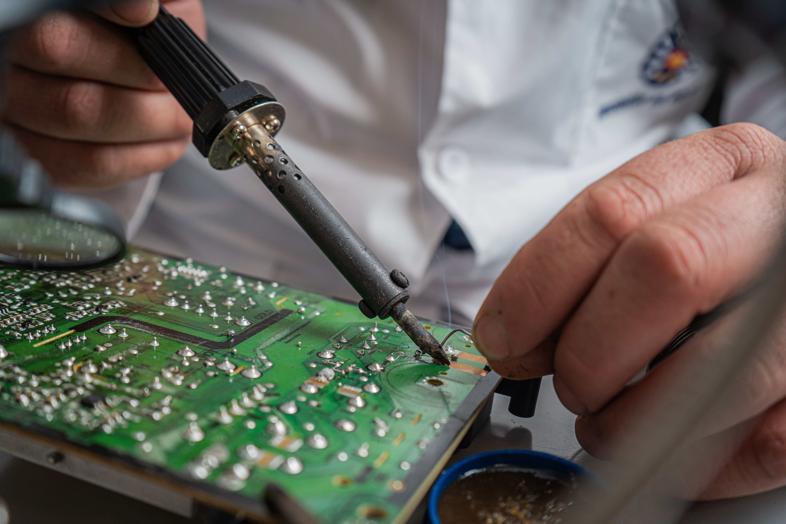
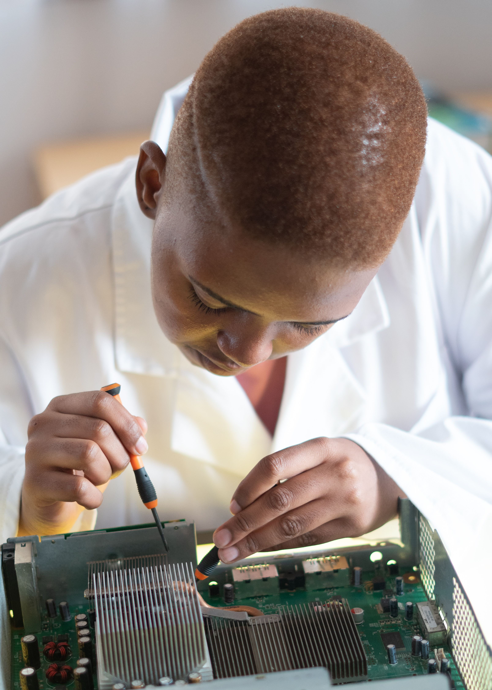

Oferecemos assistência informática para ajudar estudantes, famílias e pequenos negócios a utilizar os seus equipamentos com mais segurança e eficiência.

Ajudamos a identificar problemas de hardware e software e a encontrar soluções para recuperar o funcionamento do computador.
Pedir AssistênciaInstalamos e configuramos programas úteis para os estudos, o trabalho e as tarefas do dia a dia.
Pedir Assistência
Instalação, configuração e atualização de sistemas operativos compatíveis com os equipamentos.
Pedir AssistênciaVerificação de ameaças, ajuda na remoção de software malicioso e orientação sobre proteção de dados.
Pedir AssistênciaCuidados de limpeza e verificações de software que ajudam a manter os equipamentos em boas condições.
Pedir AssistênciaConfiguração básica de redes locais, ligação de dispositivos e resolução de problemas comuns de conectividade.
Pedir AssistênciaExplica-nos o teu problema e indica o tipo de assistência de que precisas.
Entrar em contacto